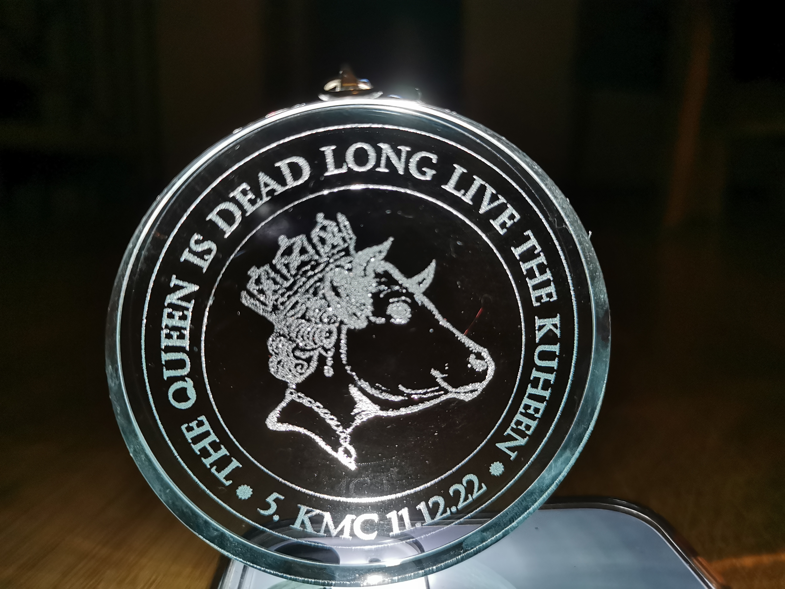

Kuhsee Marathon Challenge
Regeln
Die grundlegenden Ideen der Kuhsee Marathon Challenge sind:
- es gibt keine Starterliste,
- es gibt kein Startgeld,
- es gibt keinen ersten und keinen letzten Läufer,
- es gibt keine Cut Offs und kein DNFs.
Jeder kann zum Start kommen, jeder kann probieren die 18 Runden zu meistern. Und wenn es auch nur 9 Runden sind, soll keiner enttäuscht sein. Die Möglichkeit die wunderbaren (Nichtläufer sagen die Verrückten) Menschen kennenzulernen, neben einem Läufer zu laufen, der schon mehrere Marathons gelaufen ist oder neben einem Marathondebütant, nette Gespräche zu führen, zusammen die Tiefs und die Hochs zu erleben – ist einfach unbezahlbar.
Save The Day (6. KMC)
Der KMC geht in die sechste Runde! Am 10.12.2023!
Merkt auch den Tag schon mal vor und seid dabei, wenn wir gemeinsam den Kuhsee umrunden 🏃😊.
Ausschreibung 5. KMC
- Der KMC Start ist am 11.12.2022 um 9:00 am Imbiskiosk bei den Tischtennisplatten.
- Ein Parkplatz (Zufahrt über die Mittenwalder Str.) ist kostenlos und in unmittelbarer Nähe zum Kiosk (100 Meter) vorhanden.
- KMC ist gefinisht, wenn man volle 18 Runden um den Kuhsee gelaufen ist. Eine Runde ist ca. 2,3 km lang und man läuft insgesamt ca. 43,5 km. Die 42 km Marke ist kein Finish und liegt sowieso auf der anderen Seite des Sees.
- Die Läufer, die früher oder später fertig sind und keine Verknüpfung zu meinem Profil auf Strava oder Garmin haben, bitte ich, mir ein Link oder ein Screenshot von dem Ergebnis zu schicken.
- Es gibt für alle Finisher, wie jedes Jahr, eine besondere Medaille. Die Kosten und das Aussehen der Medaille werden nach dem Lauf bekannt gegeben (bisher zw. 5 € und 10 €).
- Bei KMC ist Eigenverpflegung angesagt. Ein Biertisch zum Abstellen des Proviants wird organisiert. Ein Laufrucksack ist auch eine gute Alternative.
- Nach dem Start bilden sich auf natürliche Weise viele Laufgrüppchen. Achtet bitte dabei, dass wir den Spaziergängern möglichst wenig Kummer bereiten. Die Augschburga sind ja ganz nett, aber die Grimmigen kommen auch öfter vor 😉
- Es sind insgesamt 3 öffentliche Toiletten auf der Strecke vorhanden, wobei mindestens eine (bei der Wasserwacht) sicher auch im Winter geöffnet bleibt.
- Bitte nehmt genug warme Sachen für "nach dem Lauf" mit. Erfahrungsgemäß haben wir kühleres Wetter bei KMC 😉
- Ich versuche dieses Jahr die KMC für 100 Marathon Club zählbar zu machen. Dafür werde ich digitale Urkunden gestalten und eine Finisherliste auf der KMC Seite bei Facebook veröffentlichen.
Geschichte
Der 5. KMC
 Die fünfte Edition der KMC am 11.12.2022 war wieder ein Erfolg: 1 Finisherin + 14 Finisher!
{kind=link}
Ein weiteres Highlight der Challenge: Fabian, Peter und Michael haben KMC zu ihrem ersten Marathon gewählt und souverän abgeschlossen!
Dieses Jahr in Absprache mit 100 Marathon Club, wurde die KMC in die offizielle Liste der anerkannten Marathons aufgenommen. Also, Marathonsammler sind willkommen!
Das sind unerwartete und sehr erfreuliche Entwicklungen des Projekts KMC.
Hiermit möchte ich JEDEM und JEDER Danke sagen: Ihr seid unglaublich und Ihr macht diesen Lauf zu etwas Besonderem!
Dank Willfried Matzke haben wir einen kleinen, aber feinen Artikel in der #AZ, so dass viele Spaziergänger uns entgegen gelächelt und gefragt haben, ob wir "die Verrückten sind, die 18 Runden rennen wollen". Ich freue mich auf sein Abschlussbericht in #AZ und Sport in Augsburg!
Eigentlich stelle ich keine Fragen am Ende der Story, werde mich aber freuen über neuen Ideen und Vorschläge für die Challenge. Was meint Ihr, was könnte die KMC noch besser und interessanter machen?
Medaillenfotos der älteren KMC


Finischer
| Nachname | Vorname | Summe | 2018 | 2019 | 2020 | 2021 | 2022 |
|---|---|---|---|---|---|---|---|
| Berger | Karl-Heinz | 1 | 1 | ||||
| Bischoff | Rainer | 1 | 1 | ||||
| Einmüller | Peter | 2 | 1 | 1 | |||
| Ecker | Fabian | 1 | 1 | ||||
| Grändorf | Dennis | 2 | 1 | 1 | |||
| Grashei | Alexandra | 1 | 1 | ||||
| Hellmann | Carsten | 3 | 1 | 1 | 1 | ||
| Joos | Stehpan | 3 | 1 | 1 | 1 | ||
| Kaleja | Yvonne | 1 | 1 | ||||
| Kliem | Manfred | 1 | 1 | ||||
| Machel | Michael | 1 | 1 | ||||
| Magg | Christoph | 4 | 1 | 1 | 1 | 1 | |
| Mai | Sybille | 1 | 1 | ||||
| Mielke | Marian | 3 | 1 | 1 | 1 | ||
| Penning | Claudia | 1 | 1 | ||||
| Roland | Frank | 3 | 1 | 1 | 1 | ||
| Rupprecht | Michael | 1 | 1 | ||||
| Safronov | Kirill | 1 | 1 | ||||
| Schaab | Dieter | 5 | 1 | 1 | 1 | 1 | 1 |
| Schneider | Stefan | 1 | 1 | ||||
| Utz | Christian | 1 | 1 | ||||
| Vogel | Simon | 1 | 1 | ||||
| Volk | Peter | 1 | 1 | ||||
| von Hofer | Moritz | 2 | 1 | 1 | |||
| Waldow | Maximilian | 1 | 1 | ||||
| Winkelmann | Sven | 2 | 1 | 1 | |||
| 45 | 3 | 5 | 12 | 10 | 15 |